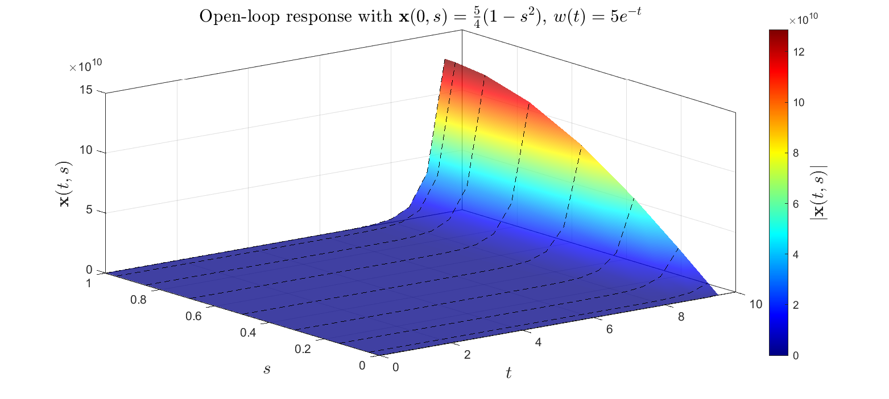
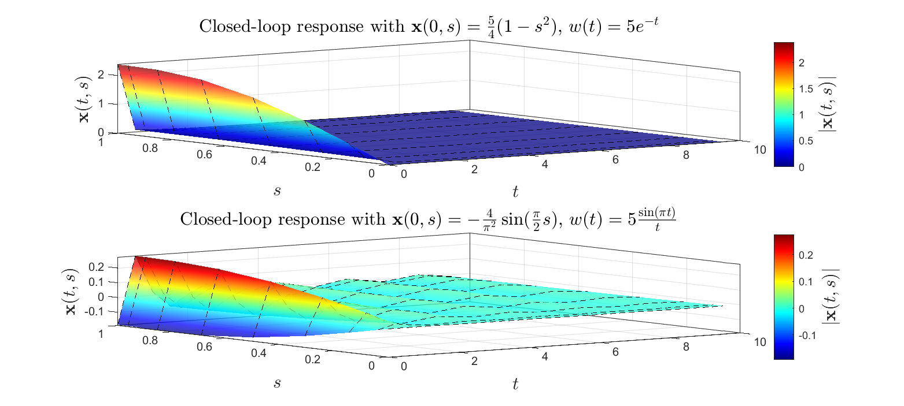
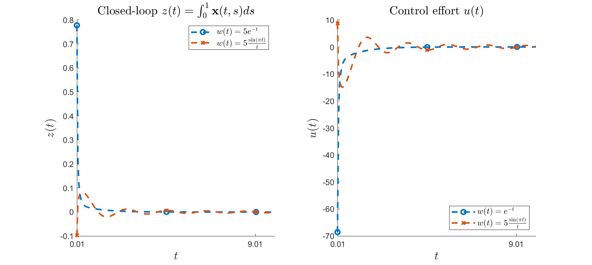

Contents
% DEMO7_observer_based_control.m % See Chapter 11.7 of the manual for a description. % % This document illustrates construction of an observer-based state feedback % controller. We construct the observer and controller separately % and couple them to find a closed loop system which is then simulated for % different IC and disturbances. % % We consider the wave equation PDE defined by: % PDE: \dot{x}(t,s) = (d^2/ds^2) x(t,s) + lam x(t,s) + w(t) + u(t), s in [0,1]; % Outputs: z(t) = [int_{0}^{1} x(t,s) ds + w(t); u(t)]; % y(t0 = x(t,1); % BCs: 0 = x(t,0) = d/ds x(t,1); % % First we convert the above PDE to a PIE of the form: % [T \dot{v}](t,s) = [A v](t,s) + [B1 w](t,s) + [B2 u](t,s); % z(t) = [C1 v](t) + [D11 w](t) + [D12 u](t); % y(t) = [C2 v](t) + [D21 w](t) + [D22 u](t) % % We find the observer gains L by solving the LPI % % min_{gam,P,Z} gam % s.t. P>=0 % [-gam*I, -D11', -(P*B1+Z*D21)'*T ]=: Q <=0 % [-D11, -gam*I, C1 ] % [-T'*(P*B1+Z*D21), C1', (P*A+Z*C2)'*T+T'*(P*A+Z*C2)] % % where L = P^{-1}*Z. % Likewise we find a state feedback control u = Kv by solving % the LPI % % min_{gam,P,Z} gam % s.t. P>=0 % [ -gam*I D11 (C1*P+D12*Z)*T' ] % [ D11' -gam*I B1' ] <= 0 % [ T*(C1*P+D12*Z) B1 (A*P+B2*Z)*T'+T*(A*P+B2*Z)'] % % where K = Z*P^{-1}. % % We simulate the open loop and closed loop response of the PDE for various % IC using PIESIM. %
clc; clear; close all; echo on %%%%%%%%%%%%%%%%%% Start Code %%%%%%%%%%%%%%%%%%
- - - - - - - - - - - - - - - - - - - - - - - - - - - - - - - - - - - %%
% % Declare the PDE, and convert it to a PIE. Declare the PDE using command line parser
pvar s t lam = 5; PDE = sys(); x = state('pde'); w = state('in'); y = state('out'); z = state('out', 2); u = state('in'); eqs = [diff(x,t) == diff(x,s,2) + lam*x + s*w + s*u; z == [int(x,s,[0,1]); u]; % change z = int(x,s,[0,1]) y == subs(x,s,1); subs(x,s,0)==0; subs(diff(x,s),s,1)==0]; PDE = addequation(PDE,eqs); PDE = setControl(PDE,u); PDE = setObserve(PDE,y); display_PDE(PDE); % Compute the associated PIE, and extract the operators. PIE = convert(PDE,'pie'); PIE = PIE.params; T = PIE.T; A = PIE.A; C1 = PIE.C1; B2 = PIE.B2; B1 = PIE.B1; D11 = PIE.D11; D12 = PIE.D12; C2 = PIE.C2; D21 = PIE.D21; D22 = PIE.D22;
%%%%%%%%%%%%%%%%%% Start Code %%%%%%%%%%%%%%%%%%
%% - - - - - - - - - - - - - - - - - - - - - - - - - - - - - - - - - - - %%
% % % Declare the PDE, and convert it to a PIE.
% Declare the PDE using command line parser
pvar s t
lam = 5;
PDE = sys();
Initialized sys() object of type "pde"
x = state('pde'); w = state('in'); y = state('out');
z = state('out', 2); u = state('in');
eqs = [diff(x,t) == diff(x,s,2) + lam*x + s*w + s*u;
z == [int(x,s,[0,1]); u]; % change z = int(x,s,[0,1])
y == subs(x,s,1);
subs(x,s,0)==0;
subs(diff(x,s),s,1)==0];
PDE = addequation(PDE,eqs);
6 equations were added to sys() object
PDE = setControl(PDE,u);
1 inputs were designated as controlled inputs
PDE = setObserve(PDE,y);
1 outputs were designated as observed outputs
display_PDE(PDE);
∂ₜ x(t,s) = ∂²ₛ x(t,s) + 5 * x(t,s) + C₁₃(s) * w(t) + C₁₄(s) * u(t);
y(t) = x(t,1);
z(t) = ₀∫¹[C₃₁ * x(t,s)]ds + C₃₂ * u(t);
0 = - x(t,0);
0 = - ∂ₛ x(t,1);
Call "PDE.C{i,j}" to see the value of coefficients Cᵢⱼ as in the displayed equations.
% Compute the associated PIE, and extract the operators.
PIE = convert(PDE,'pie');
--- Reordering the state components to allow for representation as PIE ---
--- Converting ODE-PDE to PIE ---
Initialized sys() object of type "pde"
Conversion to pie was successful
PIE = PIE.params;
T = PIE.T;
A = PIE.A; C1 = PIE.C1; B2 = PIE.B2;
B1 = PIE.B1; D11 = PIE.D11; D12 = PIE.D12;
C2 = PIE.C2; D21 = PIE.D21; D22 = PIE.D22;
- - - - - - - - - - - - - - - - - - - - - - - - - - - - - - - - - - - %%
% % Compute an optimal observer gains and optimal controller gains for the PIE.
% % Use the predefined Hinf estimator executive function. settings = lpisettings('heavy'); [prog_k, Kval, gam_co_val] = PIETOOLS_Hinf_control(PIE, settings); [prog_l, Lval, gam_ob_val] = PIETOOLS_Hinf_estimator(PIE, settings);
%% - - - - - - - - - - - - - - - - - - - - - - - - - - - - - - - - - - - %%
% % % Compute an optimal observer gains and optimal controller gains for the PIE.
% % Use the predefined Hinf estimator executive function.
settings = lpisettings('heavy');
[prog_k, Kval, gam_co_val] = PIETOOLS_Hinf_control(PIE, settings);
--- Executing Search for H_infty Optimal Controller ---
- Declaring Positive Storage Operator variable and indefinite Controller operator variable using specified options...
- Parameterize the derivative inequality...
- Enforcing the Negativity Constraint...
- Using an Equality constraint...
- Solving the LPI using the specified SDP solver...
Size: 349 120
The coefficient matrix is not full row rank, numerical problems may occur.
SeDuMi 1.3 by AdvOL, 2005-2008 and Jos F. Sturm, 1998-2003.
Alg = 2: xz-corrector, Adaptive Step-Differentiation, theta = 0.250, beta = 0.500
Detected 1 diagonal SDP block(s) with 1 linear variables
Put 6 free variables in a quadratic cone
eqs m = 120, order n = 34, dim = 351, blocks = 5
nnz(A) = 1927 + 0, nnz(ADA) = 11136, nnz(L) = 5748
it : b*y gap delta rate t/tP* t/tD* feas cg cg prec
0 : 2.43E+01 0.000
1 : 7.72E-01 6.40E+00 0.000 0.2633 0.9000 0.9000 1.21 1 1 1.2E+01
2 : 1.06E+00 1.85E+00 0.000 0.2897 0.9000 0.9000 1.19 1 1 3.5E+00
3 : 1.11E+00 4.98E-01 0.000 0.2686 0.9000 0.9000 0.96 1 1 9.5E-01
4 : 1.14E+00 1.81E-01 0.000 0.3643 0.9000 0.9000 0.76 1 1 4.0E-01
5 : 1.11E+00 6.46E-02 0.000 0.3557 0.9000 0.9000 0.61 1 1 1.8E-01
6 : 1.10E+00 1.82E-02 0.000 0.2812 0.9000 0.9000 0.56 1 1 6.6E-02
7 : 1.12E+00 5.97E-03 0.000 0.3288 0.9000 0.9000 0.35 1 1 3.3E-02
8 : 1.17E+00 2.13E-03 0.000 0.3574 0.9000 0.9000 0.15 1 1 1.9E-02
9 : 1.22E+00 8.58E-04 0.000 0.4020 0.9000 0.9000 0.12 1 1 1.2E-02
10 : 1.26E+00 3.16E-04 0.000 0.3690 0.9000 0.9000 0.20 1 1 6.5E-03
11 : 1.30E+00 1.22E-04 0.000 0.3859 0.9000 0.9000 0.19 1 1 3.9E-03
12 : 1.34E+00 5.01E-05 0.000 0.4103 0.9000 0.9000 0.28 1 1 2.3E-03
13 : 1.37E+00 2.00E-05 0.000 0.3995 0.9000 0.9000 0.20 1 1 1.4E-03
14 : 1.41E+00 6.95E-06 0.000 0.3474 0.9000 0.9000 0.27 1 1 7.1E-04
15 : 1.44E+00 2.42E-06 0.000 0.3474 0.9000 0.9000 0.25 1 1 3.9E-04
16 : 1.46E+00 8.37E-07 0.000 0.3465 0.9000 0.9000 0.28 1 1 2.0E-04
17 : 1.48E+00 2.87E-07 0.000 0.3427 0.9000 0.9000 0.30 1 1 1.0E-04
18 : 1.50E+00 1.06E-07 0.000 0.3698 0.9000 0.9000 0.35 2 2 5.4E-05
19 : 1.51E+00 3.46E-08 0.000 0.3265 0.8797 0.9000 0.37 2 2 2.9E-05
20 : 1.51E+00 1.31E-08 0.000 0.3796 0.9000 0.8798 0.42 2 2 1.5E-05
21 : 1.52E+00 5.73E-09 0.000 0.4356 0.9000 0.9000 0.41 2 2 9.2E-06
22 : 1.52E+00 2.33E-09 0.000 0.4073 0.9000 0.9000 0.48 2 2 4.9E-06
23 : 1.53E+00 1.14E-09 0.000 0.4896 0.9000 0.9000 0.38 3 2 3.3E-06
24 : 1.53E+00 4.25E-10 0.000 0.3718 0.9000 0.9000 0.43 11 7 1.6E-06
25 : 1.53E+00 1.86E-10 0.000 0.4390 0.9000 0.9000 0.40 3 3 9.6E-07
26 : 1.53E+00 6.72E-11 0.000 0.3604 0.9000 0.9000 0.41 3 3 4.8E-07
27 : 1.53E+00 3.21E-11 0.000 0.4782 0.9000 0.9000 0.39 22 24 2.9E-07
Run into numerical problems.
iter seconds digits c*x b*y
27 0.5 4.3 1.5338030035e+00 1.5338835672e+00
|Ax-b| = 4.3e-07, [Ay-c]_+ = 3.5E-09, |x|= 1.1e+04, |y|= 1.0e+06
Detailed timing (sec)
Pre IPM Post
3.100E-02 2.350E-01 1.500E-02
Max-norms: ||b||=1, ||c|| = 1,
Cholesky |add|=4, |skip| = 61, ||L.L|| = 1.76161e+08.
Residual norm: 4.3444e-07
iter: 27
feasratio: 0.3918
pinf: 0
dinf: 0
numerr: 1
timing: [0.0310 0.2350 0.0150]
wallsec: 0.2810
cpusec: 0.6562
The closed-loop H-infty norm of the given system is upper bounded by:
1.5338
[prog_l, Lval, gam_ob_val] = PIETOOLS_Hinf_estimator(PIE, settings);
--- Executing Search for H_infty Optimal Estimator ---
- Declaring Positive Storage Operator variable and indefinite Observer operator variable using specified options...
- Constructing the Negativity Constraint...
- Enforcing the Negativity Constraint...
- Using an Equality constraint...
- Solving the LPI using the specified SDP solver...
Size: 349 114
The coefficient matrix is not full row rank, numerical problems may occur.
SeDuMi 1.3 by AdvOL, 2005-2008 and Jos F. Sturm, 1998-2003.
Alg = 2: xz-corrector, Adaptive Step-Differentiation, theta = 0.250, beta = 0.500
Detected 1 diagonal SDP block(s) with 1 linear variables
Put 6 free variables in a quadratic cone
eqs m = 114, order n = 34, dim = 351, blocks = 5
nnz(A) = 1825 + 0, nnz(ADA) = 10364, nnz(L) = 5239
it : b*y gap delta rate t/tP* t/tD* feas cg cg prec
0 : 2.43E+01 0.000
1 : 4.99E-01 6.43E+00 0.000 0.2645 0.9000 0.9000 1.31 1 1 1.2E+01
2 : 4.46E-01 2.16E+00 0.000 0.3364 0.9000 0.9000 1.78 1 1 2.9E+00
3 : 4.53E-01 7.52E-01 0.000 0.3476 0.9000 0.9000 0.84 1 1 1.2E+00
4 : 4.52E-01 2.72E-01 0.000 0.3613 0.9000 0.9000 0.45 1 1 6.0E-01
5 : 4.74E-01 8.40E-02 0.000 0.3091 0.9000 0.9000 0.23 1 1 2.9E-01
6 : 4.06E-01 2.30E-02 0.000 0.2735 0.9000 0.9000 0.24 1 1 1.2E-01
7 : 3.24E-01 6.39E-03 0.000 0.2783 0.9000 0.9000 0.28 1 1 5.2E-02
8 : 2.64E-01 1.98E-03 0.000 0.3104 0.9000 0.9000 0.36 1 1 2.3E-02
9 : 2.39E-01 7.79E-04 0.000 0.3929 0.9000 0.9000 0.41 1 1 1.2E-02
10 : 2.27E-01 2.71E-04 0.000 0.3475 0.9000 0.9000 0.40 1 1 5.7E-03
11 : 2.23E-01 1.15E-04 0.000 0.4261 0.9000 0.9000 0.39 1 1 3.2E-03
12 : 2.25E-01 4.34E-05 0.000 0.3759 0.9000 0.9000 0.39 1 1 1.6E-03
13 : 2.28E-01 2.02E-05 0.000 0.4654 0.9000 0.9000 0.39 1 1 9.8E-04
14 : 2.34E-01 7.47E-06 0.000 0.3700 0.9000 0.9000 0.37 1 1 5.0E-04
15 : 2.37E-01 3.49E-06 0.000 0.4666 0.9000 0.9000 0.38 2 2 3.0E-04
16 : 2.42E-01 1.04E-06 0.000 0.2989 0.8692 0.9000 0.36 2 2 1.4E-04
17 : 2.45E-01 4.50E-07 0.000 0.4316 0.9000 0.9000 0.39 2 2 8.1E-05
18 : 2.49E-01 1.61E-07 0.000 0.3575 0.9000 0.9000 0.37 2 2 4.1E-05
19 : 2.51E-01 6.00E-08 0.000 0.3735 0.9000 0.9000 0.42 2 2 2.0E-05
20 : 2.53E-01 2.24E-08 0.000 0.3729 0.9000 0.9000 0.41 2 2 1.0E-05
21 : 2.54E-01 8.25E-09 0.000 0.3687 0.9000 0.9000 0.46 3 3 5.1E-06
22 : 2.55E-01 3.68E-09 0.000 0.4464 0.9000 0.9000 0.44 3 4 3.0E-06
23 : 2.56E-01 1.55E-09 0.000 0.4203 0.9000 0.9000 0.44 4 4 1.7E-06
24 : 2.57E-01 6.98E-10 0.000 0.4510 0.9000 0.9000 0.43 4 6 9.8E-07
Run into numerical problems.
iter seconds digits c*x b*y
24 0.3 3.8 2.5645910306e-01 2.5650002154e-01
|Ax-b| = 1.5e-06, [Ay-c]_+ = 1.3E-08, |x|= 1.8e+03, |y|= 3.1e+04
Detailed timing (sec)
Pre IPM Post
1.500E-02 1.250E-01 0.000E+00
Max-norms: ||b||=1, ||c|| = 1,
Cholesky |add|=2, |skip| = 58, ||L.L|| = 3.59306e+08.
Residual norm: 1.4789e-06
iter: 24
feasratio: 0.4341
pinf: 0
dinf: 0
numerr: 1
timing: [0.0150 0.1250 0]
wallsec: 0.1400
cpusec: 0.3594
The H-infty gain from disturbance to error in estimated state is upper bounded by:
0.2565
- - - - - - - - - - - - - - - - - - - - - - - - - - - - - - - - - - - %%
% Construct the operators defining the PIE. T_CL = [T, 0*T; 0*T, T]; A_CL = [A, B2*Kval; -Lval*C2, A+Lval*C2]; B_CL = [B1; Lval*D21]; C_CL = [C1, D12*Kval; 0*C1, C1]; D_CL = [D11; 0*D11]; % Declare the PIE. PIE_CL = pie_struct(); PIE_CL.vars = PIE.vars; PIE_CL.dom = PIE.dom; PIE_CL.T = T_CL; PIE_CL.A = A_CL; PIE_CL.B1 = B_CL; PIE_CL.C1 = C_CL; PIE_CL.D11 = D_CL; PIE_CL = initialize(PIE_CL);
%% - - - - - - - - - - - - - - - - - - - - - - - - - - - - - - - - - - - %% % Construct the operators defining the PIE. T_CL = [T, 0*T; 0*T, T]; A_CL = [A, B2*Kval; -Lval*C2, A+Lval*C2]; B_CL = [B1; Lval*D21]; C_CL = [C1, D12*Kval; 0*C1, C1]; D_CL = [D11; 0*D11]; % Declare the PIE. PIE_CL = pie_struct(); PIE_CL.vars = PIE.vars; PIE_CL.dom = PIE.dom; PIE_CL.T = T_CL; PIE_CL.A = A_CL; PIE_CL.B1 = B_CL; PIE_CL.C1 = C_CL; PIE_CL.D11 = D_CL; PIE_CL = initialize(PIE_CL);
- - - - - - - - - - - - - - - - - - - - - - - - - - - - - - - - - - - %%
% % Simulate and plot the actual and estimated PDE state using PIESIM
% Declare initial conditions for the state components of the PIE syms st sx real % Set options for the discretization and simulation: opts.plot = 'no'; % Do not plot the final solution opts.N = 8; % Expand using 8 Chebyshev polynomials opts.tf = 10; % Simulate up to t = 10; opts.dt = 1e-2; % Use time step of 10^-2 opts.intScheme=1; % Time-step using Backward Differentiation Formula (BDF) ndiff = [0,0,1]; % The PDE state involves 1 second order differentiable state variables % Simulate the solution to the PIE without controller for different IC. uinput.ic.PDE = [-10*sx]; % IC PIE uinput.w = 5*exp(-st); % disturbance [solution_OL,grid] = PIESIM(PIE,opts,uinput,ndiff); % Simulate the solution to the PIE with controller for different IC and disturbance. ndiff = [0,0,2]; uinput.ic.PDE = [-10*sx; 0]; % IC PIE and observed state uinput.w = 5*exp(-st); % disturbance [solution_CL_a,grid] = PIESIM(PIE_CL,opts,uinput,ndiff); uinput.ic.PDE = [sin(sx*pi/2); 0]; % IC PIE uinput.w = 5*sin(pi*st)./(st+eps); % disturbance [solution_CL_b,grid] = PIESIM(PIE_CL,opts,uinput,ndiff);
%% - - - - - - - - - - - - - - - - - - - - - - - - - - - - - - - - - - - %% % % % Simulate and plot the actual and estimated PDE state using PIESIM % Declare initial conditions for the state components of the PIE syms st sx real % Set options for the discretization and simulation: opts.plot = 'no'; % Do not plot the final solution opts.N = 8; % Expand using 8 Chebyshev polynomials opts.tf = 10; % Simulate up to t = 10; opts.dt = 1e-2; % Use time step of 10^-2 opts.intScheme=1; % Time-step using Backward Differentiation Formula (BDF) ndiff = [0,0,1]; % The PDE state involves 1 second order differentiable state variables % Simulate the solution to the PIE without controller for different IC. uinput.ic.PDE = [-10*sx]; % IC PIE uinput.w = 5*exp(-st); % disturbance [solution_OL,grid] = PIESIM(PIE,opts,uinput,ndiff); Warning: option Norder is not defined. Setting to a default value of 2 Solving PIE problem Warning: control inputs are not defined. Defaulting to zero Initial conditions on ODE states are not defined. Defaulting to 1 Too many initial conditions are defined. Ignoring extra conditions Setting up Chebyshev matrices for the PIE system Setup completed: integrating in time Time integration scheme is numerically unstable for the given problem. Try increasing time step to 1.579 or decreasing an order of the scheme (opts.Norder). Value of a regulated output 1 at a final time 10.000000 is 283114491383.5142 Value of a regulated output 2 at a final time 10.000000 is 0.0000 Value of an observed output 1 at a final time 10.000000 is 444715202083.8552 % Simulate the solution to the PIE with controller for different IC and disturbance. ndiff = [0,0,2]; uinput.ic.PDE = [-10*sx; 0]; % IC PIE and observed state uinput.w = 5*exp(-st); % disturbance [solution_CL_a,grid] = PIESIM(PIE_CL,opts,uinput,ndiff); Warning: option Norder is not defined. Setting to a default value of 2 Solving PIE problem Warning: control inputs are not defined. Defaulting to zero Initial conditions on ODE states are not defined. Defaulting to 1 Too many initial conditions are defined. Ignoring extra conditions Setting up Chebyshev matrices for the PIE system Setup completed: integrating in time Time integration scheme is numerically stable for the given problem. Any observed instabilities must be physical. Value of a regulated output 1 at a final time 10.000000 is 0.0000 Value of a regulated output 2 at a final time 10.000000 is -0.0003 Value of a regulated output 3 at a final time 10.000000 is 0.0000 Value of a regulated output 4 at a final time 10.000000 is 0.0000 uinput.ic.PDE = [sin(sx*pi/2); 0]; % IC PIE uinput.w = 5*sin(pi*st)./(st+eps); % disturbance [solution_CL_b,grid] = PIESIM(PIE_CL,opts,uinput,ndiff); Warning: option Norder is not defined. Setting to a default value of 2 Solving PIE problem Warning: control inputs are not defined. Defaulting to zero Initial conditions on ODE states are not defined. Defaulting to 1 Too many initial conditions are defined. Ignoring extra conditions Setting up Chebyshev matrices for the PIE system Setup completed: integrating in time Time integration scheme is numerically stable for the given problem. Any observed instabilities must be physical. Value of a regulated output 1 at a final time 10.000000 is 0.0085 Value of a regulated output 2 at a final time 10.000000 is 0.1240 Value of a regulated output 3 at a final time 10.000000 is -0.0043 Value of a regulated output 4 at a final time 10.000000 is 0.0000
Extract actual solution at each time step.
tval = solution_OL.timedep.dtime; x_OL = reshape(solution_OL.timedep.pde(:,1,:),opts.N+1,[]); x_CL_a = reshape(solution_CL_a.timedep.pde(:,1,:),opts.N+1,[]); hatx_CL_a = reshape(solution_CL_a.timedep.pde(:,2,:),opts.N+1,[]); x_CL_b = reshape(solution_CL_b.timedep.pde(:,1,:),opts.N+1,[]); hatx_CL_b = reshape(solution_CL_b.timedep.pde(:,2,:),opts.N+1,[]);
%% % Extract actual solution at each time step. tval = solution_OL.timedep.dtime; x_OL = reshape(solution_OL.timedep.pde(:,1,:),opts.N+1,[]); x_CL_a = reshape(solution_CL_a.timedep.pde(:,1,:),opts.N+1,[]); hatx_CL_a = reshape(solution_CL_a.timedep.pde(:,2,:),opts.N+1,[]); x_CL_b = reshape(solution_CL_b.timedep.pde(:,1,:),opts.N+1,[]); hatx_CL_b = reshape(solution_CL_b.timedep.pde(:,2,:),opts.N+1,[]);
Set options for the plot
plot_indcs = floor(logspace(0,log(opts.tf/opts.dt)/log(10),5)); %plot_indcs = floor(linspace(1,opts.tf/opts.dt,66)); tplot = tval(plot_indcs); % Only plot at select times colors = {'b','g','m','r','k','c','r','y','o'}; % Colors for the plot grid_idcs = 1:2:9; % Only plot at a few grid points
%%
% Set options for the plot
plot_indcs = floor(logspace(0,log(opts.tf/opts.dt)/log(10),5));
%plot_indcs = floor(linspace(1,opts.tf/opts.dt,66));
tplot = tval(plot_indcs); % Only plot at select times
colors = {'b','g','m','r','k','c','r','y','o'}; % Colors for the plot
grid_idcs = 1:2:9; % Only plot at a few grid points
tsteps = 1:50:length(tval); fig1 = figure(1); surf(tval(tsteps),grid.phys,x_OL(:,tsteps,:),'FaceAlpha',0.75,'Linestyle','--','FaceColor','interp','MeshStyle','row'); h=colorbar ; colormap jet box on ylabel(h,'$|\mathbf{x}(t,s)|$','interpreter', 'latex','FontSize',15) set(gcf, 'Color', 'w'); xlabel('$t$','FontSize',15,'Interpreter','latex'); ylabel('$s$','FontSize',15,'Interpreter','latex'); zlabel('$\mathbf{x}(t,s)$','FontSize',15,'Interpreter','latex'); title('Open loop response with $\mathbf{x}(0,s)=\frac{5}{4}(1-s^2)$, $w(t)=5e^{-t}$','Interpreter','latex','FontSize',15); fig2 = figure(2); subplot(2,1,1); surf(tval(tsteps),grid.phys,x_CL_a(:,tsteps,:),'FaceAlpha',0.75,'Linestyle','--','FaceColor','interp','MeshStyle','row'); h=colorbar ; colormap jet box on ylabel(h,'$|\mathbf{x}(t,s)|$','interpreter', 'latex','FontSize',15) set(gcf, 'Color', 'w'); xlabel('$t$','FontSize',15,'Interpreter','latex'); ylabel('$s$','FontSize',15,'Interpreter','latex'); zlabel('$\mathbf{x}(t,s)$','FontSize',15,'Interpreter','latex'); title('Closed loop response with $\mathbf{x}(0,s)=\frac{5}{4}(1-s^2)$, $w(t)=5e^{-t}$','Interpreter','latex','FontSize',15); subplot(2,1,2); surf(tval(tsteps),grid.phys,x_CL_b(:,tsteps,:),'FaceAlpha',0.75,'Linestyle','--','FaceColor','interp','MeshStyle','row'); h=colorbar ; colormap jet box on ylabel(h,'$|\mathbf{x}(t,s)|$','interpreter', 'latex','FontSize',15) set(gcf, 'Color', 'w'); xlabel('$t$','FontSize',15,'Interpreter','latex'); ylabel('$s$','FontSize',15,'Interpreter','latex'); zlabel('$\mathbf{x}(t,s)$','FontSize',15,'Interpreter','latex'); title('Closed loop response with $\mathbf{x}(0,s)=-\frac{4}{\pi^2}\sin(\frac{\pi}{2}s)$, $w(t)=5\frac{\sin(\pi t)}{t}$','Interpreter','latex','FontSize',15);
%%
tsteps = 1:50:length(tval);
fig1 = figure(1);
surf(tval(tsteps),grid.phys,x_OL(:,tsteps,:),'FaceAlpha',0.75,'Linestyle','--','FaceColor','interp','MeshStyle','row');
h=colorbar ;
colormap jet
box on
ylabel(h,'$|\mathbf{x}(t,s)|$','interpreter', 'latex','FontSize',15)
set(gcf, 'Color', 'w');
xlabel('$t$','FontSize',15,'Interpreter','latex'); ylabel('$s$','FontSize',15,'Interpreter','latex');
zlabel('$\mathbf{x}(t,s)$','FontSize',15,'Interpreter','latex');
title('Open loop response with $\mathbf{x}(0,s)=\frac{5}{4}(1-s^2)$, $w(t)=5e^{-t}$','Interpreter','latex','FontSize',15);
fig2 = figure(2);
subplot(2,1,1);
surf(tval(tsteps),grid.phys,x_CL_a(:,tsteps,:),'FaceAlpha',0.75,'Linestyle','--','FaceColor','interp','MeshStyle','row');
h=colorbar ;
colormap jet
box on
ylabel(h,'$|\mathbf{x}(t,s)|$','interpreter', 'latex','FontSize',15)
set(gcf, 'Color', 'w');
xlabel('$t$','FontSize',15,'Interpreter','latex'); ylabel('$s$','FontSize',15,'Interpreter','latex');
zlabel('$\mathbf{x}(t,s)$','FontSize',15,'Interpreter','latex');
title('Closed loop response with $\mathbf{x}(0,s)=\frac{5}{4}(1-s^2)$, $w(t)=5e^{-t}$','Interpreter','latex','FontSize',15);
subplot(2,1,2);
surf(tval(tsteps),grid.phys,x_CL_b(:,tsteps,:),'FaceAlpha',0.75,'Linestyle','--','FaceColor','interp','MeshStyle','row');
h=colorbar ;
colormap jet
box on
ylabel(h,'$|\mathbf{x}(t,s)|$','interpreter', 'latex','FontSize',15)
set(gcf, 'Color', 'w');
xlabel('$t$','FontSize',15,'Interpreter','latex'); ylabel('$s$','FontSize',15,'Interpreter','latex');
zlabel('$\mathbf{x}(t,s)$','FontSize',15,'Interpreter','latex');
title('Closed loop response with $\mathbf{x}(0,s)=-\frac{4}{\pi^2}\sin(\frac{\pi}{2}s)$, $w(t)=5\frac{\sin(\pi t)}{t}$','Interpreter','latex','FontSize',15);
  XX = linspace(0,10,200); w2_tval = subs(5*sin(pi*st)./(st+eps),tval); w1_tval = subs(5*exp(-st),tval); z_quadrature = double(subs(0.5*sx^2-sx,grid.phys)); k_quadrature = double(subs(Kval.Q1,s,grid.phys)); ZZ1 = trapz(z_quadrature,x_CL_a); %int wa ZZ2 = trapz(z_quadrature,x_CL_b);%int wb ZZ3 = trapz(k_quadrature,hatx_CL_a); %u wa ZZ4 = trapz(k_quadrature,hatx_CL_b); %u wb fig3 = figure(3); subplot(1,2,1); hold on; [YY] = spline(tval,ZZ1,XX); plot(XX,YY,'--o','MarkerIndices',1:90:length(XX),'LineWidth',2,'DisplayName',['$w(t) = 5e^{-t}$']); [YY] = spline(tval,ZZ2,XX); plot(XX,YY,'--x','MarkerIndices',1:90:length(XX),'LineWidth',2,'DisplayName',['$w(t) = 5\frac{\sin(\pi t)}{t}$']); hold off; subplot(1,2,2); hold on; [YY] = spline(tval,ZZ3,XX); plot(XX,YY,'--o','MarkerIndices',1:90:length(XX),'LineWidth',2,'DisplayName',['$w(t) = e^{-t}$']); [YY] = spline(tval,ZZ4,XX); plot(XX,YY,'--x','MarkerIndices',1:90:length(XX),'LineWidth',2,'DisplayName',['$w(t) = 5\frac{\sin(\pi t)}{t}$']); hold off; ax5 = subplot(1,2,1); set(ax5,'XTick',tval(1:900:end)); lgd1 = legend('Interpreter','latex'); lgd1.FontSize = 10.5; lgd1.Location = 'northeast'; xlabel('$t$','FontSize',15,'Interpreter','latex'); ylabel('$z(t)$','FontSize',15,'Interpreter','latex'); title('Closed loop $z(t) = \int_0^1 \mathbf{x}(t,s) ds$','Interpreter','latex','FontSize',15); ax6 = subplot(1,2,2); set(ax6,'XTick',tval(1:900:end)); lgd1 = legend('Interpreter','latex'); lgd1.FontSize = 10.5; lgd1.Location = 'southeast'; xlabel('$t$','FontSize',15,'Interpreter','latex'); ylabel('$u(t)$','FontSize',15,'Interpreter','latex'); title('Control effort $u(t)$','Interpreter','latex','FontSize',15);
%%
XX = linspace(0,10,200);
w2_tval = subs(5*sin(pi*st)./(st+eps),tval);
w1_tval = subs(5*exp(-st),tval);
z_quadrature = double(subs(0.5*sx^2-sx,grid.phys));
k_quadrature = double(subs(Kval.Q1,s,grid.phys));
ZZ1 = trapz(z_quadrature,x_CL_a); %int wa
ZZ2 = trapz(z_quadrature,x_CL_b);%int wb
ZZ3 = trapz(k_quadrature,hatx_CL_a); %u wa
ZZ4 = trapz(k_quadrature,hatx_CL_b); %u wb
fig3 = figure(3);
subplot(1,2,1); hold on;
[YY] = spline(tval,ZZ1,XX);
plot(XX,YY,'--o','MarkerIndices',1:90:length(XX),'LineWidth',2,'DisplayName',['$w(t) = 5e^{-t}$']);
[YY] = spline(tval,ZZ2,XX);
plot(XX,YY,'--x','MarkerIndices',1:90:length(XX),'LineWidth',2,'DisplayName',['$w(t) = 5\frac{\sin(\pi t)}{t}$']); hold off;
subplot(1,2,2); hold on;
[YY] = spline(tval,ZZ3,XX);
plot(XX,YY,'--o','MarkerIndices',1:90:length(XX),'LineWidth',2,'DisplayName',['$w(t) = e^{-t}$']);
[YY] = spline(tval,ZZ4,XX);
plot(XX,YY,'--x','MarkerIndices',1:90:length(XX),'LineWidth',2,'DisplayName',['$w(t) = 5\frac{\sin(\pi t)}{t}$']); hold off;
ax5 = subplot(1,2,1);
set(ax5,'XTick',tval(1:900:end));
lgd1 = legend('Interpreter','latex'); lgd1.FontSize = 10.5;
lgd1.Location = 'northeast';
xlabel('$t$','FontSize',15,'Interpreter','latex'); ylabel('$z(t)$','FontSize',15,'Interpreter','latex');
title('Closed loop $z(t) = \int_0^1 \mathbf{x}(t,s) ds$','Interpreter','latex','FontSize',15);
ax6 = subplot(1,2,2);
set(ax6,'XTick',tval(1:900:end));
lgd1 = legend('Interpreter','latex'); lgd1.FontSize = 10.5;
lgd1.Location = 'southeast';
xlabel('$t$','FontSize',15,'Interpreter','latex'); ylabel('$u(t)$','FontSize',15,'Interpreter','latex');
title('Control effort $u(t)$','Interpreter','latex','FontSize',15);
 %%%%%%%%%%%%%%%%%% End Code %%%%%%%%%%%%%%%%%% echo off
%% %%%%%%%%%%%%%%%%%% End Code %%%%%%%%%%%%%%%%%% echo off